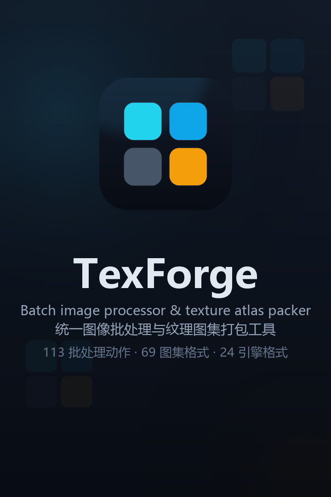
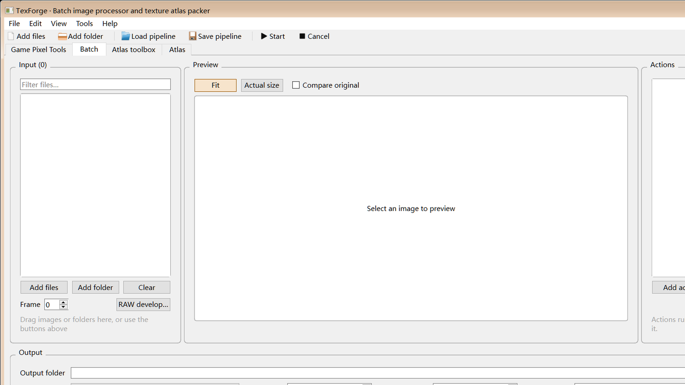
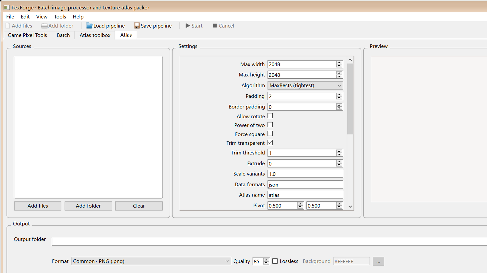

把上千张图，一次处理成发布级资源
批处理、纹理图集、法线贴图、通道打包、Mipmap、引擎目录规划与资产审查——一套内核，两个入口（GUI + CLI），中英双语界面。

一套工具覆盖美术资源全流程
从单张图片的格式转换，到整包图集的引擎落地，TexForge 把重复劳动收敛成可复用的配置。
113 个批处理动作
缩放、裁剪、旋转、锐化、水印、格式转换、压缩、元数据读写均可叠加，按顺序执行并输出结果报告。
69 种图集图片格式
覆盖 Unity、Godot、Unreal、Cocos、Phaser、PixiJS、Spine、LibGDX、Egret、LayaAir 等运行时所需的图集描述文件。
24 种引擎数据格式
导出 JSON、XML、plist、CSS、CSV、SpriteSheet 以及各引擎专用元数据，直接落到项目目录。
法线贴图与通道打包
从高度图生成法线贴图，按 ORM / RMA 等约定打包粗糙度、金属度、AO，避免手工作业的通道错位。
Mipmap 与平台限制
按平台生成 Mipmap 链，并按移动端与桌面端的尺寸上限做校验，提前暴露超限纹理。
资产审查与报告
批量扫描命名、尺寸、重复文件与配对缺失，输出 CSV / JSON 报告，便于团队复盘与自动化门禁。
四个工作区，对应四类真实任务
不用在十几个小工具之间来回切换，按任务进入对应工作区即可完成从源图到成品的闭环。
游戏像素工具
法线贴图、通道打包、Mipmap 与引擎目录规划，面向 2D / 2.5D / 3D 资产。
批量处理
把动作序列应用到整个文件夹，支持预设、递归扫描与失败项重跑。
图集工具箱
九宫格切图、精灵拆分、尺寸与命名校验等周边能力。
图集打包
排布、留白、裁剪、旋转与多格式导出，一次生成图集图片与描述文件。
三步完成一次发布级处理
导入
拖入文件夹或图片，递归扫描子目录，按扩展名与命名规则过滤。
配置
叠加动作或设置图集参数，保存为预设，下次直接复用。
导出
输出到目标目录，生成图集与引擎元数据，同时得到可核对的结果报告。
界面实拍


已在 Microsoft Store 上架
Windows 10 / 11（x64）直接安装，支持中文与 English 界面。